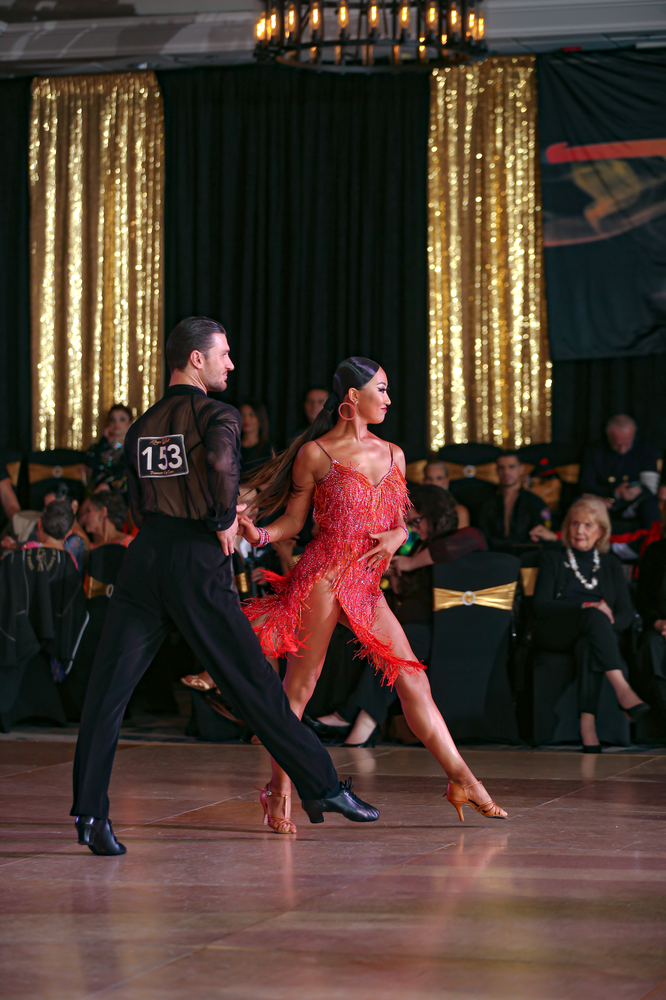
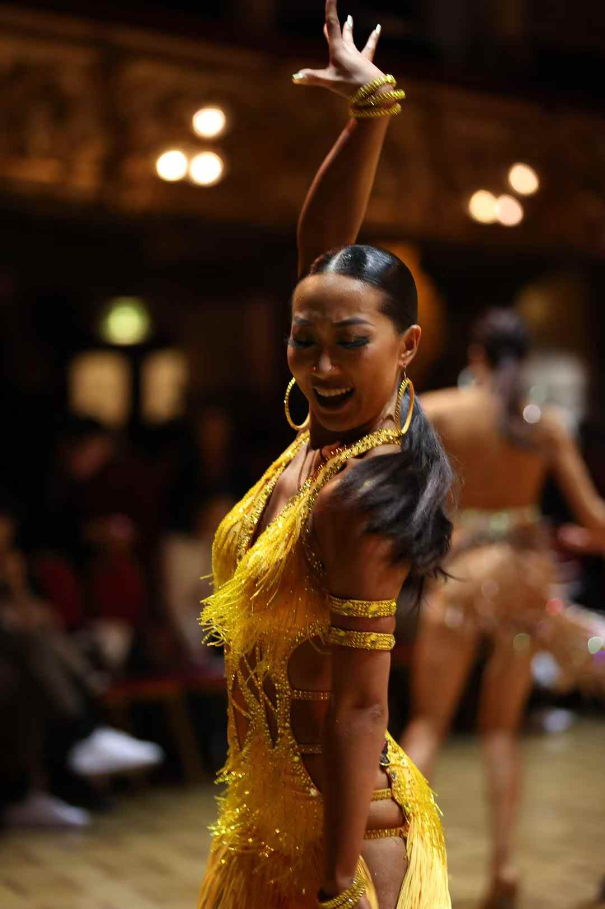
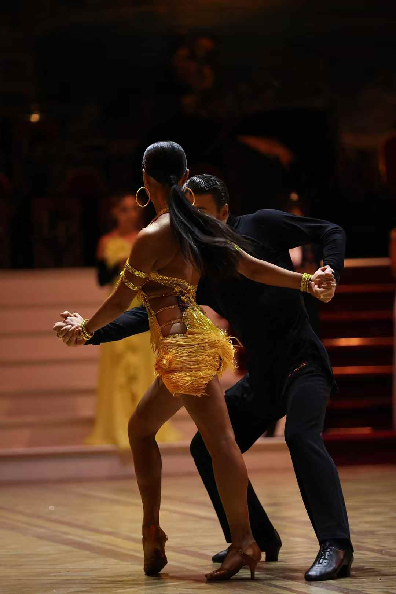
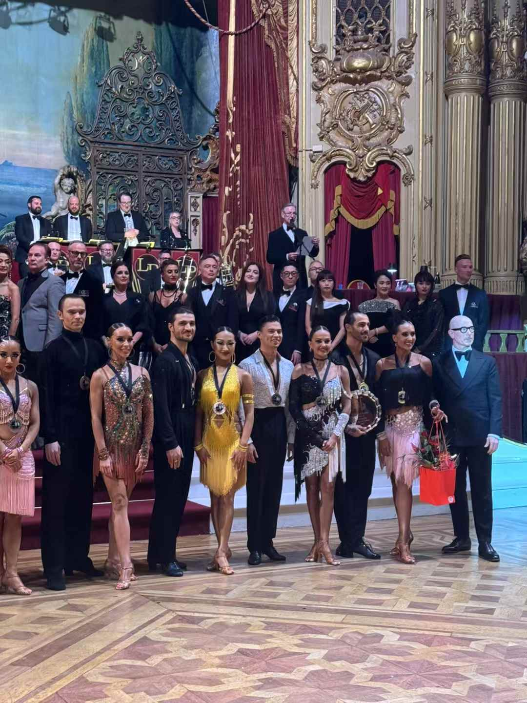

← Back to Beyond research
Dance photo library

King’s Ball 2023 · 1st place, Best of the Best Dance-Off (Open Division)

The Open Worlds 2025 · 3rd place

The Open Worlds 2025 · On the floor

The Open Worlds 2025 · Awards presentation